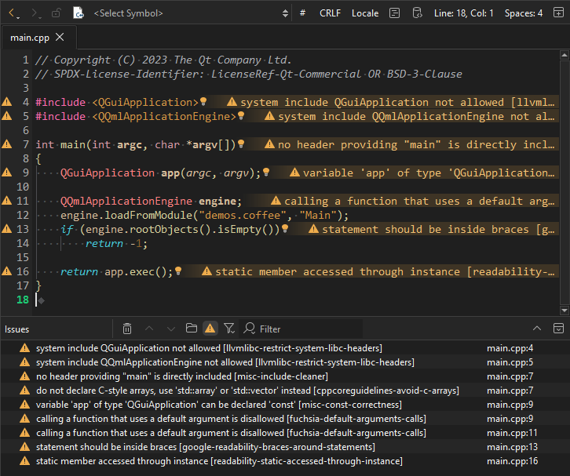
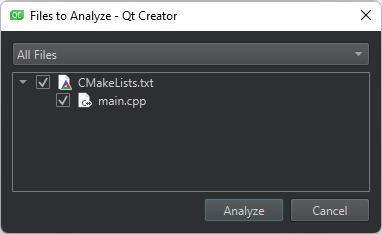
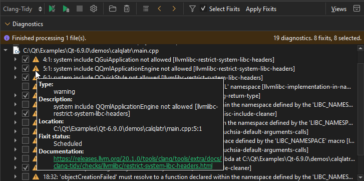
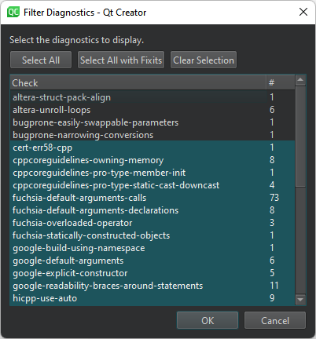

Analyze code with Clang-Tidy and Clazy
Note: The Clang static analyzer checks are a part of Clang-Tidy. To use the checks, you must create a custom configuration for the Clang tools and enable them for Clang-Tidy.
Analyze the current file
By default, Clang tools automatically analyze open files and show the results in the code editor and Issues view.

Clang diagnostics shown in the editor and Issues view.
To turn off the analysis, go to Preferences > Analyzer > Clang Tools and clear Analyze open files.
To run Clang-Tidy or Clazy to analyze the currently open file:
- Select
 (Analyze File) on the editor toolbar, and then select the tool: Clang-Tidy or Clazy.
(Analyze File) on the editor toolbar, and then select the tool: Clang-Tidy or Clazy. - Select Tools > C++ > Analyze Current File with Clang-Tidy or Analyze Current File with Clazy.
Analyze an open project
To run Clang-Tidy or Clazy to analyze an open project:
- Select Analyze > Clang-Tidy or Clazy.
- Select the files to apply the checks to.

- Select Analyze to start the checks.
View diagnostics
The Clang-Tidy or Clazy view shows the issues:

Diagnostics in the Clang-Tidy view.
Note: If you select Debug in the mode selector to open the Debug mode and then select Clang-Tidy or Clazy, you must select the  (Analyze Project) button to open the Files to Analyze dialog.
(Analyze Project) button to open the Files to Analyze dialog.
Double-click an issue to move to the location where the issue appears in the code editor.
If a fixit exists for an issue, you can select the checkbox next to the issue to schedule it for fixing. Select the Select Fixits checkbox to select all fixits. To see the status of an issue, hover the mouse pointer over the icon next to the checkbox.
To see more information about an issue that is marked with the  icon, hover the mouse pointer over the line.
icon, hover the mouse pointer over the line.
Select the  button to customize diagnostics for the current project.
button to customize diagnostics for the current project.
Filter dianostics
To filter diagnostics:
- Select
 to open the Filter Diagnostics dialog.
to open the Filter Diagnostics dialog.
- Select the diagnostics to view.
- Select OK.
To view all diagnostics, select Select All. To view diagnostics that have fixits, select Select All with Fixits.
To hide all diagnostics, select Clear Selection.
To view diagnostics of a particular kind, right-click an entry in Diagnostics and select Filter for This Diagnostic Kind in the context menu. To hide diagnostics of that kind, select Filter out This Diagnostic Kind.
Suppress diagnostics
To suppress diagnostics, select Suppress This Diagnostic or Suppress This Diagnostic Inline in the context menu.
To view the suppression list for a project and to remove diagnostics from it, select Projects > Project Settings > Clang Tools.
Disable checks
To disable checks of a particular type either globally or for a particular project, select Disable This Check or Disable These Checks in the context menu.
Load diagnostics from YAML files
In addition to running the tools to collect diagnostics, you can select  to load diagnostics from YAML files that you exported using the
to load diagnostics from YAML files that you exported using the -export fixes option.
See also Check code syntax, Configure Clang Diagnostics, How To: Analyze, Specify Clang tools settings, Analyzers, and Clang Tools.